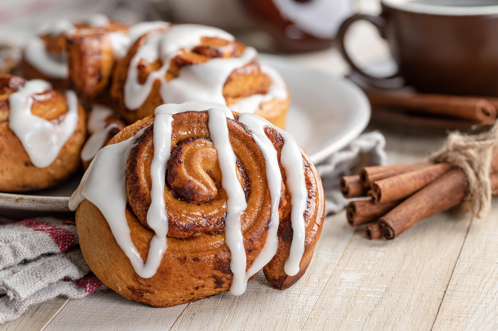

Cinammon Rolls Recipe

This Cinnamon Rolls Recipe is a classic treat, perfect for breakfast, brunch, or a cozy dessert.
The soft, pillowy dough is infused with the comforting aroma of cinnamon and brown sugar, creating a sweet and slightly spiced filling.
Topped with a rich vanilla glaze, these rolls are indulgent, satisfying, and sure to impress your family and friends.
Best of all, they’re made with simple ingredients and can be prepared at home with minimal effort, making them an irresistible bakery-style delight!
Ingredients
For the Dough:
- 500g all-purpose flour
- 1 packet instant yeast
- 67g granulated sugar
- 1 tsp salt
- 120ml warm milk
- 60ml warm water
- 56g unsalted butter, melted
- 1 large egg
For the Filling:
- 100g brown sugar
- 2 1/2 tbsp ground cinnamon
- 56g unsalted butter, softened
For the Glaze:
120g powdered sugar
2-3 tbsp milk or heavy cream
1 tsp vanilla extract
Instructions
1. Make the dough:
- In a large bowl, combine warm milk, warm water,
sugar, and yeast. Let it sit for 5 minutes until foamy.
- Add melted butter, egg, salt, and half of the flour.
Mix until combined. Gradually add the remaining flour until the dough comes together
- Knead for about 8 minutes (by hand or with a mixer) until the dough is smooth and elastic.
- Place the dough in a greased bowl, cover it with a clean towel,
and let it rise for 1 hour or until doubled in size.
2. Prepare the filling:
- In a small bowl, mix brown sugar and cinnamon.
- Roll the dough into a 12x18-inch rectangle on a floured surface.
Spread the softened butter over the dough, leaving a small border around the edges.
- Sprinkle the cinnamon-sugar mixture evenly over the buttered dough.
3. Shape the rolls:
- Roll the dough tightly from the long edge to form a log. Cut into 12 equal pieces.
- Arrange the rolls in a greased 9x13-inch baking dish. Cover and let rise for 30 minutes.
4. Bake the rolls:
- Preheat the oven to 350°F (175°C).
- Bake the cinnamon rolls for 20-25 minutes, or until lightly golden.
5. Make the glaze:
- In a small bowl, whisk powdered sugar, milk, and vanilla extract until smooth.
Adjust the thickness by adding more milk if necessary
6. Serve:
- Drizzle the glaze over the warm cinnamon rolls. Serve and enjoy!